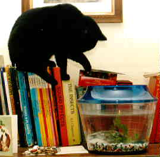

|  | Charlie the cat was black all over. He walked with knock-knees and shouted loudly during the night. He was a good cat, and performed his duties effectively to the end. Charlie died in September 2004, aged around about 10. I don't know exactly how old he was - and nor did he. It never seemed to bother him. One morning many years ago a neighbour walked up our path and said "We've found this cat, and as you've already got one black one we thought you'd like it." And so it was. Charlie once caught a Daubenton's Bat and brought it into the house. It was nearly dead but as I wanted to keep it I put it in the freezer to finish it off kindly. For some reason others thought that this was terribly cruel. Charlie was not too impressed either. |
Charlie was so named (by his finder, not by me) after a TV character in public information films, who was, strange to say, a cat. Now, I remember the character as a black cat, but a recent discovery on the Web: Charley Says - Dont Talk To Strangers - shows that not only was the original Charley not black at all, but he even spelt his name differently. So our Charlie might as well have been named after my uncle Charlie - except I don't have one.